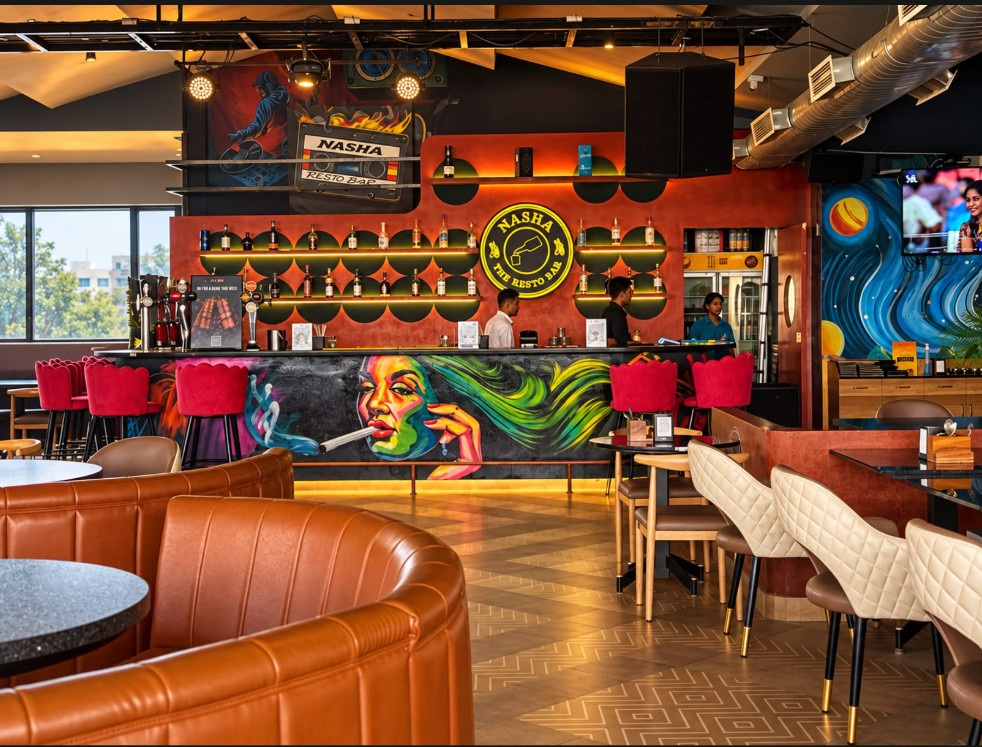

PASS IT AROUND
PASS IT AROUNDMADE TO SHARE
01Big plates. Little bites. Everyone reaching for more.

BTM LAYOUT, BENGALURU
Good food. Great spirits. Your kind of night.
Come find your happy place above the everyday.

01 / THE NASHA STATE OF MIND
Some evenings deserve more than the usual. A table full of favourites. Conversations that go nowhere and everywhere. That “let’s stay a little longer†feeling.
Welcome to Nasha Resto Bar, in BTM 2nd Stage. Bring your people. Make yourself at home.
02 / SOMETHING FOR EVERY MOOD
For the first bite, the next sip,
and everything in between.
PASS IT AROUNDBig plates. Little bites. Everyone reaching for more.
 RAISE A GLASS
RAISE A GLASSA little sparkle for your catch-up, celebration, or just because.
 FOLLOW YOUR CRAVINGS
FOLLOW YOUR CRAVINGSThe kind of food that turns “just a drink†into dinner.

03 / YOUR PEOPLE. YOUR PLACE.
The overdue catch-up. The spontaneous plan.
The evening that becomes a story. Make it Nasha.
04 / SEE YOU AROUND
5, 100 Feet Ring Road, BTM 2nd Stage
Every day, 12 noon – 1 am. Bring your people.
BTM 2nd Stage · Bengaluru, Karnataka